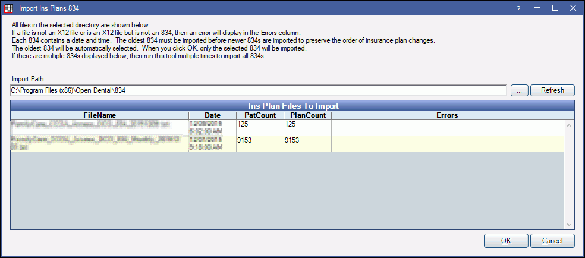
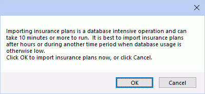
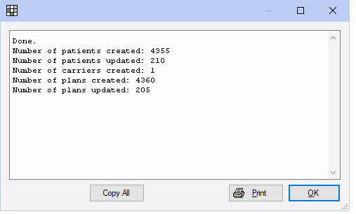

Import Ins Plan 834
In the Manage Module, click Import Ins Plans.
The Import Ins Plan 834 feature is only available when Public Health is turned on. It is a very specific function that imports data in 834 format. 834 files are Benefit Enrollment and Maintenance files that contain patient and insurance plan information. Importing a file can update patient information if a matching record already exists and create patient records if they don't.
- Only X12 files in 834 format can be imported.
- One file is imported at a time.
- Import oldest files first to preserve the order of insurance plan changes.
Import Path: Insert the path where the 834 file exists, or click [...] to navigate to the file.
Refresh: Click to refresh list.
The oldest file will highlight in yellow. Click OK to open the file and view patients. If Open Dental is able to automatically match a patient to an existing patient record (based on last name, first name, birthdate) the PatNum field will include the patient's Open Dental number.

To manually attach a patient to an existing record, double-click the patient row, then select the patient.
Automatically create new employers when importing plans for unknown employers:
- Checked: When a user clicks OK, any employers that do not exist in Open Dental will be created.
- Unchecked: Unknown employers will be ignored.
Automatically create new patients when importing plans for unknown patients:
- Checked: When a user clicks OK, any patients who don't already match an existing patient in Open Dental will have a new record created.
- Unchecked: Only patients with a matching patient record (PatNum) will be updated. Unmatched patients will be ignored.
Drop all existing patient plan when importing new plans:
- Checked: For patients already in the database, their current insurance will be dropped and the insurance plan being imported from the 834 will be added.
- Unchecked: For patients with existing plans, if the plan being imported differs, it will be added as secondary insurance.
Click OK to begin importing patients and insurance information. A confirmation window will open.
Click OK again to begin. Depending on the size of the file, it may take some time. A progress indicator will update status of the import. Minimizing the screen may reduce import time.
When the import is complete, a window will open listing the changes that were made.
To print the list, click Print. Click OK to close.
In the Main Menu, click Lists, Insurance Plans and verify the plans imported correctly. See Insurance Plans.
- As files are processed, they will be moved to an Archive folder within the original folder. If a file is partially processed for some reason, the processed portion will move to the archive folder, while the unprocessed portion will remain in the original file.
- Several processes that occur during import of the 834 are tracked in the Audit Trail.